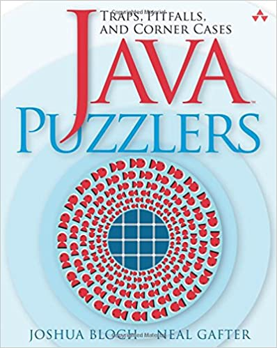
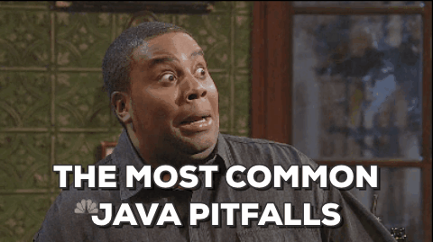

If you are a Java programmer, I highly recommend reading this book: Java Puzzler, by Joshua Bloch and Neal Gafter. This book will introduce many common traps, pitfalls and corner cases that you are highly likely to meet when programming with Java.
This post is intended to summarize the most interesting and critical pitfalls recorded in this book. Trust me, you will be highly surprised by some of them.

This post will keep updating. Welcome to revisit!
Expressive Puzzlers
The Joy of Hex
What does the program print?
1 | public class JoyOfHex { |
The most intuitive answer would be 1cafebabe, right? However, if you run this program, it is in fact cafebabe.
A very subtle feature for decimal literal is: decimal literals are all positive. This feature is not shared by hexadecimal or octal literals. To write a negative decimal literal, we always use a minus sign - in combination with a decimal literal. Thus, negative decimal constants are clearly identifiable by the presence of the minus sign. Hex and octal literals are negative if their high-order bit is 1.
In this program, the number 0xcafebabe is an int constant with its high-order bit set, so it is negative. The addition performed by the program is a mixed-type computation: the left operand is of type long. Java will promote the int value to a long value with a widening primitive conversion.
Final computation will be: 0xffffffffcafebabeL + 0x0000000100000000L = 0x00000000cafebabeL
Swap Meat
What does this program print?
1 | public class CleverSwap { |
As referred by its name, this program is supposed to swap the values of the variables x and y. However, you will find it fails, printing x = 0; y = 1984.
The most natural way to swap two variables is to use a temporary variable:
1 | int tmp = x; |
It was discovered that one could avoid the temporary variable:
1 | x = x ^ y; |
In fact, it works. However, it is not recommended, as it is far less clear than its naive counterpart and far slower. Now, you might combine the three exclusive OR operations and make it into a single statement, like in the code.
However, it is guaranteed not to work in Java, though might work in other languages (C, C++, …).
Operands of operators are evaluated from left to right. To evaluate the expression x ^= expr, the value of x is sampled before expr is evaluated, and the exclusive OR of these two values is assigned to the variable x.
The code below describes what in fact happens in the original program:
1 | int tmp1 = x; // first appearance of x in the expression |
If you really want to make it work, you shoudl write it like:
1 | y = (x ^= (y ^= x)) ^ y; // NOT recommended! |
A lesson: do not assign to the same variable more than once in a single expression.
Dos Equis
Now look at an example of conditional operator. What does this program print?
1 | public class DosEquis { |
Okay, this program seems trivial, and both print lines will print out x. However, if you run the program, it turns out to be X88.
I would admit this is the most surprising behavior of Java I’ve ever seen.
The answer lies in a dark corner of the specification for the conditional operator. Mixed-type computation can be confusing. Nowhere is this more apparent than in conditional expressions.
So, this problem is due to that these two expressions have different result types (one is char is one is int). There are three key points in determining the result type of a conditional expression:
- If the second and third operands have the same type, that is the type of the conditional expression;
- If one of the operands is of type T and T is
byte,short, orcharand the other operand is a constant expression of typeintwhose value is represented in type T, the type of the conditional expression is T. - Otherwise, binary numeric promotion is applied to the operands types, and the type of the conditional expression is the promoted type of the second and third operands.
Remember: use the same type for the second and third operands in conditional expressions.
Puzzlers with Characters
Animal Farm
What does this program print?
1 | public class AnimalFarm { |
Both strings will be length: 10 in this case. Though the == operator does not test whether two objects are equal (it tests whether two object reference are identical), compile-time constants of type String are interned. So this program should print True, right?
Unfortunately, no. This is because the second string is not initialized with constant expressions, and they will not point to the a same object.
Escape Rout
The following programs uses two Unicode escapes. What does this program print?
1 | public class EscapeRout { |
You probably guess the result is 16 or 26. However, it’s 2.
A key to understanding this puzzle is: Java provides no special treatment for Unicode escapes within string literals. The compiler translates Unicode escapes into the characters they represent before it pareses the program into tokens, such as string literals. The Unicode escape in the program closes a one-character string literal ("a"), and same for the second one ("b"). In fact, the print line should be:
System.out.println("a".length() + "b".length())When programming with Java, remember that Unicode escapes are designed for use when a programmer needs to insert a character that can’t be represented in the source file’s character set. Don’t use unicode escapes to represent ASCII character.
Hello Whirled
The program below seems to be absolutely right.
1 | /** |
However, it does not compile. If you have read the previous puzzlers, you might get a subtle hint now.
Look at \units in the comments. These characters begin with a backslash (\) followed by the letter u, which denotes the start of a Unicode escape. These characters are not followed by four hexadecimal digits, so the Unicode escape is ill-formed.
Don’t put a Unicode escape in the program though it is well-formed, unless you have a strong reason to do it.
Sometimes you might want to use Unicode escape to represent some special characters:
1 | /** |
Please use HTML entity escapes instead.
Classy Fire
What does this program print?
1 | public class Classifier { |
you might nit find anything wrong in this program. However, this program does not compile. You may also notice that I did not use code highlight. This is becasue you will easily find out the truth if I go with it:
1 | public class Classifier { |
Once again, as we mentioned earlier, string literals are not treated specially within comments. So, block comments do not nest either.
The best way to comment out a section of code is to use a sequence of single-line comments. You may use some IDEs to automate this process.
1 | // /* Operator not supported yet */ |
What’s My Class?
You might get this issue previously, which is presented by the program below:
1 | public class Me { |
It seems the program tries to replace all . with /. However, it prints ///////.class.
The problem is due to that String.replaceAll takes a regular expression as its first parameter (same with String.split).Thus, every character of the class name if replaced by a slash.
An alternative is to use java.util.regex.Pattern.quote after release 5.0. It takes a string as a parameter and adds any necessary escapes, returning a regular expression string that matches the input string exactly.
Dupe of URL
What do you think about this program? It doesn’t compile, right?
1 | public class BrowserTest { |
However, it does. You might notice that I did not use the code highlight again.
1 | public class BrowserTest { |
In fact, the URL that appears in the middle of the program is a statement label followed by an end-of-line comment. Labels are rarely needed in Java.
No Pain, No Gain
What does this program print?
1 | public class Rhymes { |
You might notice that rnd.nextInt(2) will never return 2, so case 2 will never be reached; in addition, since there is no break at the end of each case, the default case will always be executed, so the result always should be Main.
Well, you successfully spotted several issues in this program, but the result will always be ain.
There is a very subtle error that you didn’t catch: new StringBuffer('M') probably does not do what you think it does. Let me ask you a question:
Q: Are you pretty sure you are familiar with
StringBuffer(char)constructor?
I am pretty sure you aren’t with a good reason: It does not exist.
All StringBuffer constructors are listed below:
- A parameterless one;
- one that takes a
Stringindicating the initial contents of the string buffer; - one that takes an
intindicating its initial capacity.
So, if we pass a char to it, the third constructor will be used.
To avoid this kind of problem, use familiar idioms and APIs whenever possible. If you must use unfamiliar APIs, read the documentation carefully.
Loopy Puzzlers
A Big Delight in Every Byte
What does this program print?
1 | public class BigDelight { |
Okay, it seems that b goes through every value from Byte.MIN_VALUE to Byte.MAX_VALUE (exclusive). As a byte has 8 bits, so the min value is 0x90 while the max one is 0x7F. What happens here?
To figure it out, I should know what really happens in b == 0x90. The comparison of a byte to an int is a mixed-type comparison. Java will promote the byte to an int with a widening primitive conversion and compares the two int values. And remember, byte a signed value, and the conversion performs sign extension, promoting negative byte values to numerically equal int values. Thus, if we treat b as an int, its values are from -128 to +127, while 0x90 is +144.
Remember, avoid mixed-type comparisons, because they are inherently confusing, and there are many hidden cases we might not be aware of.
Shifty i’s
What does this program print?
1 | public class Shifty { |
Okay, -1 is an int value with all 32 bits set. The left-shift operator shifts zeros in from the right to fill the low-order bits vacated by the shift, since there are 32 bits in -1, -1 will become 0 when i is 32. Is it right? If you run this program, you will not see such a value printed but an infinite loop.
Remember, shift operators use only the five low-order bits of their right operand as the shift distance, or six bits if the left operand is a long. The applies to all three shift operators: <<, >> and >>>. So the shift distance is always between 0 and 31, or 0 and 63 if the left operand is a long.
A good practice from this puzzler is, shift distances should, if possible, be constants.
Ghost of Looper
Provide a declaration for i that turns this loop in to an infinite loop:
1 | while (i != 0) |
To solve this puzzler, you should be aware that >>>= is a compound assignment operator and they will silently perform narrowing primitive conversions. Narrow primitive conversions can lose information about the magnitude or precision of numeric values. Thus, if we declare i with short i = -1, the program will do the following:
- As
1is anint, Java will promoteito type ofint, which turns0xffffinto0xffffffff. - This value if then shifted to the right by one bit without sign extension to yield the
intvalue0x7fffffff. - In order to store the
intvalue into theshortvariable, Java performs the dreaded narrowing primitive conversion, which simply lops off the high-order 16 bits of the value, which is0xffffagain.
Remember: do not use compound assignment operators on short, byte, or char variables.\
Exceptional Puzzlers
Indecision
What does this program print?
1 | public class Indecisive { |
We know that once it reaches a return statement in a function, the rest of the function will not execute anymore; on the other hand, finally block will always be executed. What is the fact?
The answer is false. return statement is called abrupt completion. When both the try and the finally block complete abruptly, the abrupt completion in the try block is discarded, and the whole try-finally statement completes abruptly for the same reason as the finally block. In this program, the abrupt completion caused by the return statement is the try block is discarded, and the try-finally statement completes abruptly because of the return statement in the finally block.
Remember, never exit a finally block with a return, break, continue, or throw, and never allow a checked exception to propagate out of a finally block.
Exceptionally Arcane
Look at the three programs below and expect their behaviors.
1 | import java.io.IOException; |
1 | public class Arcane2 { |
1 | interface Type1 { |
You will get compile error in the first program, as the language specification says that it is a compile-time error for a catch clause to catch a checked exception type E if the corresponding try clause can’t throw an exception of some subtype of E.
By the same token, in the second program, it should not compile either, but it does. Catch clauses that catch Exception or Throwable are legal regardless of the contents of the corresponding try clause.
Should the third program compile? Method f is declared to throw checked exceptions in Type1 and Type2. Interface Type3 inherits from Type1 and Type2, so it would seem that invoking f on an object whose static type is Type3 could potentially throw either of these exceptions. However, it is not true that Type3.f can throw either the exception declared on Type1.f or the one declared on Type2.f. Each interface limits the set of checked exceptions that method f can throw. The set of checked exceptions that a method can throw is the intersection of the sets of checked exceptions that it is declared to throw in all applicable types. Thus, the f method on an object whose static type is Type3 can’t throw any checked exceptions at all.
Hello, Goodbye
What does this program print?
1 | public class HelloGoodbye { |
Recall the puzzler “Indecision”, you might remember that if there are abrupt completions in both try and finally block, we will follow the on in finally block. However, in this case, you will find that this program will only print Hello World.
It is true that a finally is executed when a try block completes execution whether normally or abruptly. In this program, however, the try block does not complete execution at all. The System.exit method halts the execution of the current thread and all others dead in their tracks. The presence of a finally clause does not give a method special permission to continue executing.
When System.exit is called, the virtual machine performs two cleanup tasks before shutting down. First, it executes all shutdown hooks that have been registered with Runtime.addShutdownHook. This is useful to release resources external to the VM. Use shutdown hook for behavior that must occur before the VM exits.
1 | public class HelloGoodbye { |
The second cleanup task performed by the VM when System.exit is called concerns finalizers. If either System.runFinalizerOnExit or its evil twin Runtime.runFimalizerOnExit has been called, the VM runs the finalizers on all objects that have not yet been finalized. These methods were deprecated a log time ago and with good reason. Never call System.runFinalizersOnExit or Runtime.runFinalizersOnExit for any reason: They are among the most dangerous methods in the Java libraries.
In summary, System.exit stops all program threads immediately: it does not cause finally blocks to execute, but it does run shutdown hooks before halting the VM.
The Reluctant Constructor
Have you ever seen a throws clause in a constructor declaration? What does the program below print?
1 | public class Reluctant { |
It seems that the constructor will throw an exception when it is called, which is caught by the try clause in the main function. However, if you run this function, it throws a StackOverflowError. Why?
The error indicates an infinite recursion. When you invoke a constructor, the instance variable initializers run before the body of the constructor. In this case, the initializer for the variable internalInstance invokes the constructor recursively. The constructor, in turn, initializes its own internalInstance field by invoking the Reluctant constructor again and so on, ad infinitum, which leads to an infinite recursion.
In fact, do not assume that you will not write similar codes. It is very common for an object to contain instances of its own type.
Remember: a constructor must declare any checked exceptions thrown by its instance initializers.
———— END OF THIS POST ————
If you want to read more puzzlers, please go to this page!